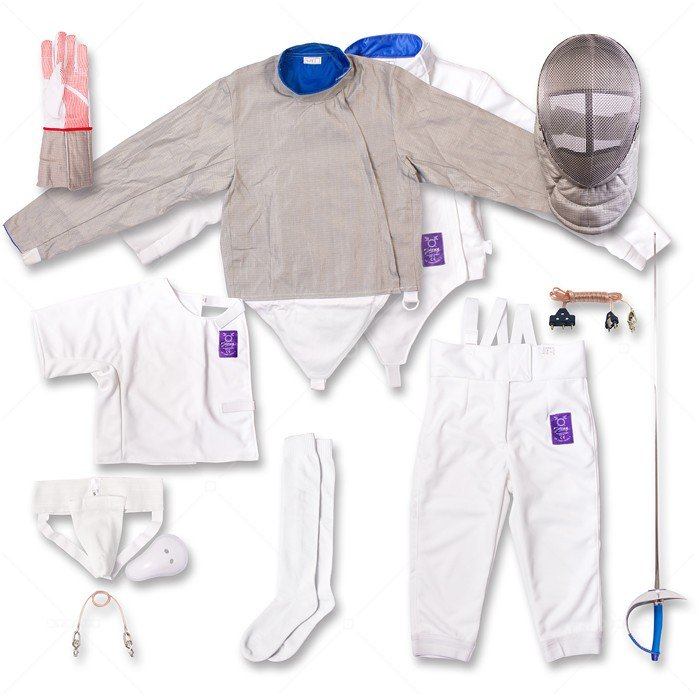
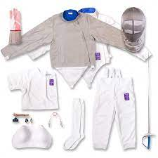

Рекомендации по приобретению фехтовальной экипировки.

Добрый день, Уважаемые посетители сайта!
На этой странице мы хотим рассказать Вам о фехтовальной экипировке.
Приходя на занятия, наши ученики часто спрашивают, какую фехтовальную экипировку покупать, где покупать, что необходимо в первую очередь и что делать, если мы передумаем заниматься, куда её девать?
Давайте начнём по порядку:
- 1. Когда следует покупать фехтовальную экипировку (или товары для фехтования)?
Конечно, чтобы полностью понять подходит Вам этот вид спорта – фехтование, надо хотя бы месяц походить на занятия, это в первую очередь касается детей. Взрослые люди с выбором определятся быстрее.
Если ребёнку понравился тренер, атмосфера занятий, ну и сам вид спорта, конечно, тогда смело можно через месяц перейти к выбору экипировки.
- 2. Где можно приобрести фехтовальную экипировку?
Уточняйте данную информацию у Вашего треенра.
- 3. Что именно нужно покупать и в какой последовательности?
На этот вопрос я бы проконсультировался бы с личным тренером. Но, так как мы тоже тренируем, то мы напишем про наш вид оружия – это спортивная сабля.
Если Вы решили заниматься спортивной саблей, то Вам понадобиться следующая экипировка (по номеру будет понятно, в какой последовательности мы рекомендуем её покупать):

- 1. Это только для девочек – жёсткость, защищает грудь от ударов/уколов.перчатка
- 2. Фехтовальная куртка
- 3. Фехтовальная маска и чехол для неё
- 4. Фехтовальная перчатка
- 5. Спортивная сабля и чехол для неё
- 6. Электрическая куртка и шнуры
- 7. Фехтовальные штаны, гетры и набочник для участия на соревнованиях.
Конечно, экипировку можно приобрести всю сразу если хватает средств, но можно и частями, по согласованию с личным тренером.
Совет! Покупая фехтовальную куртку для ребёнка, приобретайте её на вырост, на один или два размера больше, для того чтобы её хватило года на три-четыре.
Внимание! Что нужно знать об фехтовальной экипировке. Дельные советы:
- 1. Не прислоняйте мокрый белый костюм к металлическим изделиям, включая саблю и маску – на костюме может остаться ржавое пятно.
- 2. Старайтесь, чтобы вода не попадала на электромаску, электрокуртку или саблю они также могут начать ржаветь.
- 3. Фехтовальная экипировка бывает двух типов, тренировочная и соревновательная.
Как правило, на начальном уровне приобретают тренировочную экипировку, её вполне хватает года на три, четыре. Она имеет маркировку 350NW. А если Вы или Ваш ребёнок захочет выступать на мировом уровне, тогда понадобится соревновательная экипировка.
Внимание! При приобретении фехтовальной экипировке мы часто рекомендуем подписывать её, ведь бывают часто ситуации, обычно на соревнованиях, что спортсмены путают и кладут к себе в сумку чужую экипировку, и по приходе домой обнаруживают этот факт. И, что бы быстрее можно было найти Вашу экипировку, она должна быть подписана.
Старайтесь её подписывать таким образом, чтобы при возможной продаже фехтовальной экипировке на вторичном рынке, её захотели купить. Ведь если на всей спине будет написана Ваша Фамилия, вряд ли её кто-то захочет приобретать. Такая экипировка как правило остаётся в наследство Клубу, где занимался Ваш ребёнок или Вы сами.
Данная статья имеет информационное значение. В любом случае пользуйтесь здравой логикой и консультируйтесь со своим личным тренером.